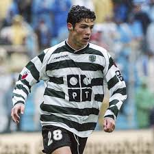
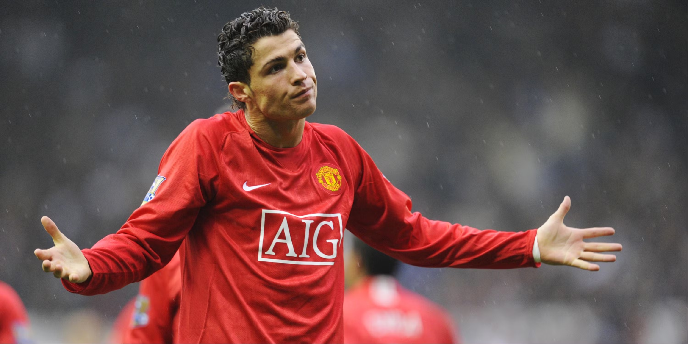
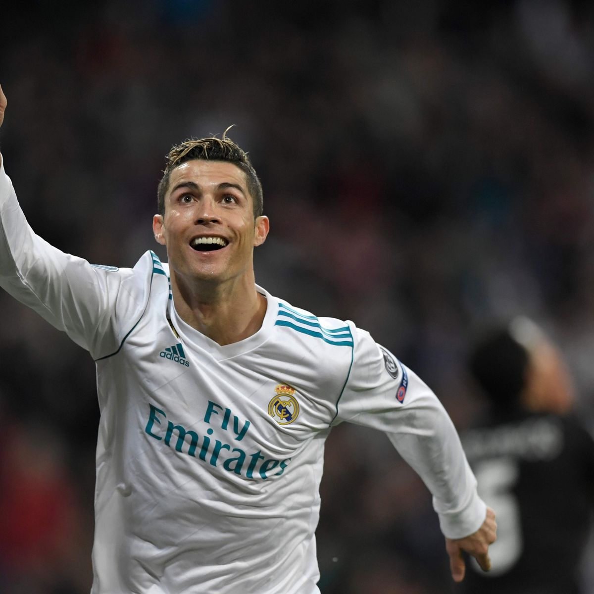
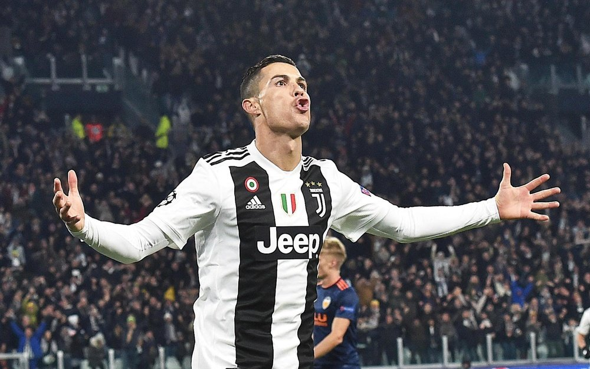
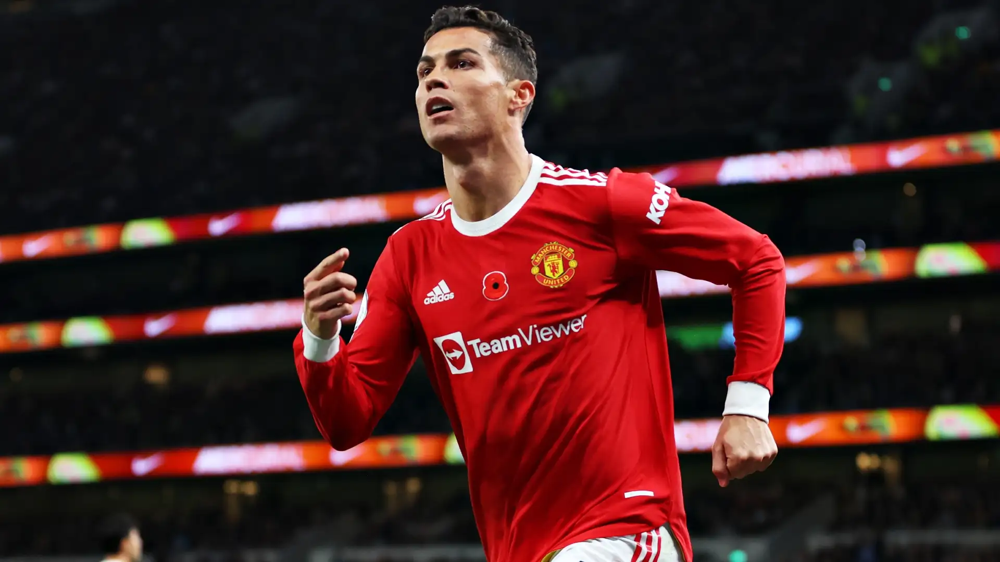
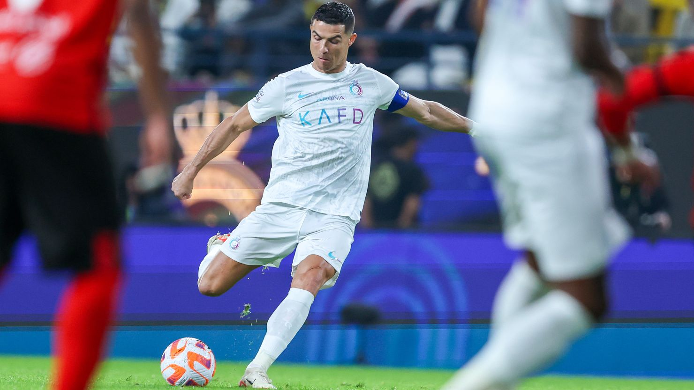
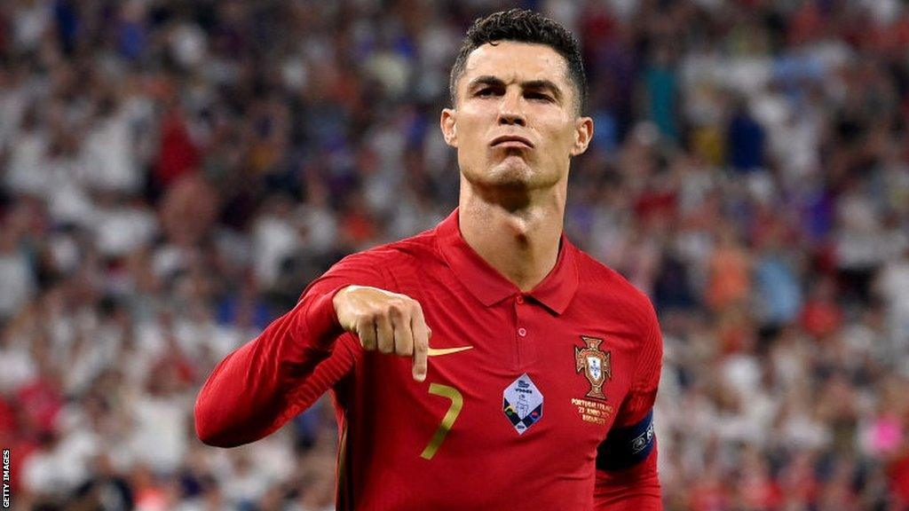

I. SPORTING CP (2002 - 2003) - THE DEBUT |
|  |
Cristiano Ronaldo's professional journey began at Sporting CP in Lisbon. He made history by being the first player to play for the club's U-16, U-17, U-18, B-team, and the first team within a single season. His explosive pace and dribbling caught the eye of world football after a legendary friendly match against Manchester United in 2003. Stat: 31 Apps | 5 Goals |
II. MANCHESTER UNITED (2003 - 2009) - THE RISING STAR |
|
Under the guidance of Sir Alex Ferguson, Ronaldo evolved from a skillful winger into a goal-scoring machine. He won three Premier League titles, his first Champions League in 2008, and his first Ballon d'Or. He became a global icon wearing the legendary number 7 shirt at Old Trafford. Stat: 292 Apps | 118 Goals |
 |
III. REAL MADRID (2009 - 2018) - THE GALACTICO PEAK |
|  |
Ronaldo moved to Real Madrid for a world-record fee. During his nine seasons, he became the club's all-time top scorer, averaging more than a goal per game. He won four Champions League titles (including three in a row) and added four more Ballon d'Or awards to his collection, solidifying his place as a Madrid legend. Stat: 438 Apps | 450 Goals |
IV. JUVENTUS (2018 - 2021) - THE ITALIAN CHALLENGE |
|
Seeking a new challenge, he moved to Juventus. He conquered Italy by winning two Serie A titles and becoming the fastest player in club history to reach 100 goals. He proved his dominance in a third top European league. Stat: 134 Apps | 101 Goals |
 |
V. MANCHESTER UNITED (2021 - 2022) - THE HOMECOMING |
|  |
In 2021, the world witnessed an emotional return to Manchester United. Ronaldo proved his longevity by being the club's top scorer in his return season, including several dramatic late winners in the Champions League that reminded fans of his enduring class. Stat: 54 Apps | 27 Goals |
VI. AL-NASSR (2023 - PRESENT) - THE ASIAN REVOLUTION |
|
Joining Al-Nassr FC, Ronaldo brought global attention to the Saudi Pro League. In 2023, he was the world's top goalscorer for the calendar year with 54 goals. He led the team to victory in the Arab Club Champions Cup, continuing to break records well into his late 30s. Stat: 70+ Apps | 60+ Goals (Ongoing) |
 |
|
Cristiano Ronaldo's journey with the Portugal National Team began in 2003.He has represented his country in five World Cups and five European Championships, becoming the all-time leading international goalscorer in football history. His greatest international achievement came in 2016, when he led Portugal to their first-ever major trophy by winning the UEFA European Championship (Euro 2016). He followed this glory by captaining the team to victory in the UEFA Nations League in 2019. Even in his late 30s, Ronaldo remains the heart of the national team, holding the world records for most international appearances and most Portugal international goals scored by a male nlavar International Stat:
|
 |
Page 2 of 5